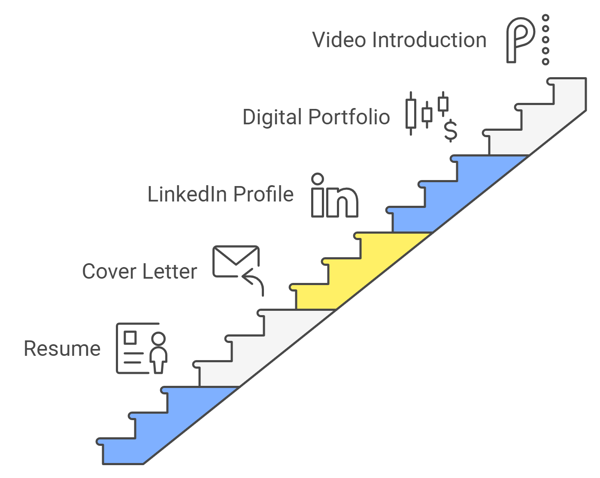
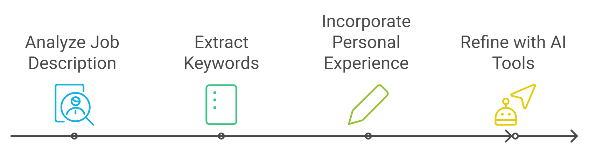
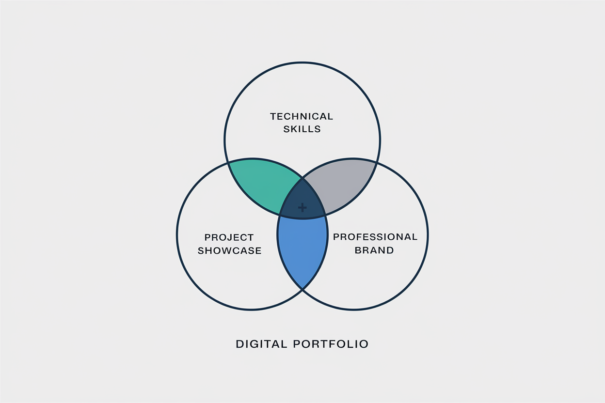
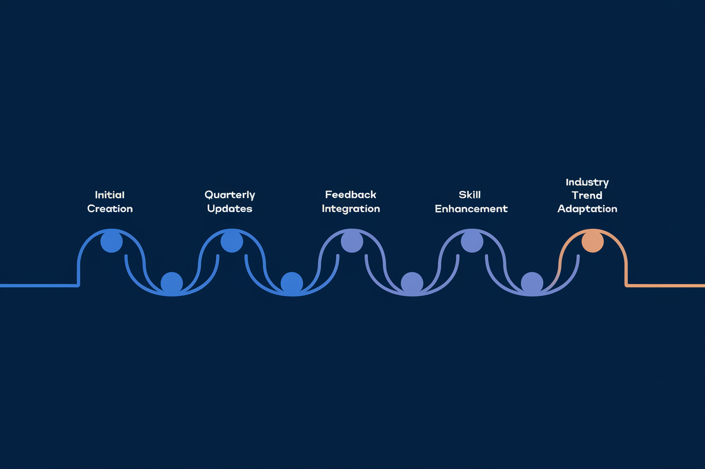

Chapter 5: Beyond the Resume: Building a Cohesive STEM Application Package
Welcome back, STEM superstars! In the last chapter, we mastered the art of showcasing technical expertise. Now, we go beyond the resume and create a cohesive application package that can withstand the "largest" black hole's strongest gravitational pull.

In today's competitive STEM job market, a well-crafted resume is just the appetizer. To truly stand out, you need a full-course meal of an application package that showcases your skills, experience, and potential across multiple platforms. This chapter guides you through creating a comprehensive application strategy that leverages AI tools while maintaining your authentic professional voice.
5.1 AI-Optimized Cover Letters
While resumes provide a snapshot of your qualifications, cover letters offer an opportunity to tell your professional story. In some settings, it's the difference between a tweet and a TED talk. Here's how to create an AI-friendly yet personable cover letter:
1. Structure for AI Readability
- Use clear headings: Introduction, Relevant Experience, Why This Role (Think of it as creating chapters in your professional novel)
- Include keywords from the job description, mirroring your resume (You're playing keyword bingo where the top prize is a job interview)
- Keep paragraphs short and use bullet points for easy scanning (Because even AI gets tired eyes)
2. Balancing Personalization and AI Optimization
- Open with a compelling hook related to the company or role (Grab their attention like a cat video)
- Use industry-specific language that aligns with the job description (Speak their language, even if it sounds like technobabble)
- Showcase your understanding of the company's challenges or goals (Show them you've done your homework, not just Googled five minutes before writing)
3. Complementing Your Resume
- Highlight 2-3 key achievements that directly relate to the job requirements (Your greatest hits album, professional edition)
- Expand on a project or experience that deserves more detail (Give them the director's cut of your career blockbuster)
- Demonstrate how your unique combination of skills makes you an ideal candidate (You're not just a hammer, you're the entire toolbox)
AI Tip: Use natural language processing (NLP) tools to analyze the company's website and job description. Incorporate similar language and tone in your cover letter.

Example AI-Optimized Opening Paragraph:
"As a data scientist with a passion for renewable energy, I was excited to see the opportunity at GreenTech Solutions. Your recent project on optimizing wind farm layouts using machine learning aligns perfectly with my research at MIT, where I developed an algorithm that increased energy output by 15% in simulated environments. I am eager to bring this expertise to your team and contribute to GreenTech's mission of accelerating the transition to sustainable energy."
5.2 LinkedIn Profile Optimization
Your LinkedIn profile often serves as a secondary resume. It's your professional alter ego, without the cape and tights. Here's how to optimize it for both AI and human viewers:
1. Keyword-Rich Headline and Summary
- Use your headline to showcase your current role and key expertise (Your professional tagline, but cooler than "I'll be back")
- Create a summary that includes core skills and career highlights (Your career's CliffsNotes)
- Incorporate industry-specific keywords throughout your profile (Season to enhance not overwhelm)
2. Detailed Experience Sections
- Mirror the content of your resume, but expand with more detail (It's your resume's cooler, more talkative cousin)
- Use bullet points to highlight key achievements and responsibilities (Even AI likes a good list)
- Include media such as project demos, presentations, or publications (It's Show and Tell for grown-ups)
3. Skills and Endorsements
- List relevant technical skills, prioritizing those most important for your target roles (Your professional superpowers, ranked)
- Seek endorsements from colleagues for your top skills (Like collecting Pokemon)
- Take LinkedIn Skill Assessments to earn badges (Gotta catch 'em all!)
4. Recommendations
- Request recommendations from supervisors, colleagues, or clients (Your professional fan club, in writing)
- Guide recommenders to highlight specific skills or projects relevant to your career goals (There's nothing wrong with giving your biggest fans a little direction)
5. Activity and Engagement
- Share or create content related to your field regularly (Be the thought leader you wish to see in the world)
- Engage with posts from industry leaders and professional groups (Network like a social butterfly, but with purpose)
- Showcase your thought leadership through articles or comments (Your professional soapbox, use it wisely)
AI Tip: LinkedIn's algorithm favors profiles with regular activity and completeness. Aim for "All-Star" status to improve visibility.
5.3 Digital Portfolios for STEM Professionals
A well-crafted digital portfolio can set you apart in STEM fields. It's your professional art gallery for algorithms and innovations. Here's how to create one that impresses both AI and human reviewers:
1. Choose the Right Platform
- Consider platforms like GitHub Pages, Behance, or a personal website (Pick your stage, then rock it)
- Ensure your chosen platform is easy for both AI crawlers and humans to navigate (No maze-like designs, please)
2. Showcase Key Projects
- Highlight 4-6 of your most impressive or relevant projects (Your greatest hits, not your entire discography)
- For each project, include:
- Problem statement (The villain in your project story)
- Technologies used (Your weapons of choice)
- Your role and contributions (How you saved the day)
- Outcomes and impact (The happily ever after)
- Links to live demos or GitHub repositories if applicable (Share your toys)
3. Demonstrate Technical Writing Skills
- Include technical blog posts or articles you've written (Show off your inner tech Shakespeare)
- Showcase any contributions to documentation or technical guides (Being a good writer can be just as important as being a good coder)
4. Visual Elements
- Use charts, graphs, or infographics to illustrate project outcomes (A picture is worth a thousand lines of code)
- Include screenshots or demos of software projects (Let your work speak for itself)
- For hardware projects, include photos or 3D renderings (Not all STEM is in the cloud)
5. Testimonials and Recognition
- Include quotes from supervisors, clients, or colleagues (Your professional cheer squad)
- Showcase any awards, patents, or notable recognitions (Humble brag time)

AI Tip: Use schema markup on your portfolio website to help search engines and AI tools better understand and categorize your content.
5.4 Tailoring Your Application Package for Different STEM Fields
Different STEM fields may require different emphases in your application package. Here are some field-specific tips:
Software Engineering
- Emphasize your GitHub profile and open-source contributions (Show them your code is a social butterfly)
- Showcase coding challenges or hackathons you've participated in (Your coding gym sessions)
- Highlight any apps or software you've developed independently (Your digital babies)
Data Science
- Focus on demonstrating your ability to derive insights from data (You're not just crunching numbers, you're telling their stories)
- Showcase projects with compelling data visualizations (Make the numbers dance)
- Highlight any contributions to machine learning models or algorithms (Show how you're teaching machines to be as smart as you)
Biotechnology
- Emphasize lab skills and techniques in your cover letter (Your petri dish prowess)
- Showcase any publications or patents in your portfolio (Your contributions to the Book of Life)
- Highlight experience with specific equipment or methodologies (From microscopes to mass spectrometers, show off your lab toy collection)
Aerospace Engineering
- Focus on projects related to aircraft, spacecraft, or propulsion systems (Your contributions to reaching the stars, literally)
- Highlight any experience with industry-standard software or simulations (Show them you can fly high, even with your feet on the ground)
- Showcase any relevant internships or co-op experiences (Your flight hours in the industry)
5.5 Crafting a Consistent Personal Brand
Consistency across all elements of your application package is key to creating a strong personal brand:
1. Unified Visual Identity
- Use consistent formatting, fonts, and color schemes across your resume, cover letter, and portfolio (Your professional costume, make it recognizable)
- Develop a personal logo or monogram to use across platforms (Optional, but could be your professional Bat-signal)
2. Consistent Messaging
- Develop a personal mission statement or professional tagline (Your career's elevator pitch)
- Ensure your career narrative is consistent across all platforms (Keep your story straight, even if your career path isn't)
3. Online Presence Audit
- Google yourself and ensure all public information aligns with your professional image (Clean up your digital footprint – no one needs to see those college photos)
- Set up Google Alerts for your name to monitor your online presence (Be your own paparazzi)
5.6 Leveraging AI for Application Package Enhancement
AI tools can help you refine and optimize your entire application package:
1. AI-Powered Content Suggestions
- Use AI writing assistants to generate ideas for your cover letter or LinkedIn summary (Like having a brainstorming sesh with a very smart, very tireless partner)
- Leverage AI tools to suggest improvements for project descriptions (Polish your prose)
2. Sentiment Analysis
- Use AI to analyze the tone of your application materials (Make sure your resume sounds like it's having a great day)
- Ensure a consistent, positive, and confident tone across all elements (Channel your inner motivational speaker)
3. Competitive Analysis
- Use AI-powered tools to compare your application package against industry standards (Keep your friends close, enemies closer)
- Identify areas where you can differentiate yourself from other candidates (Find your unique selling proposition, your secret sauce)
Example AI Tool Usage:
IBM Watson Tone Analyzer can help ensure your cover letter strikes the right emotional notes. For instance, it might suggest adjusting language to increase confidence or enthusiasm where appropriate.
5.7 The Role of Video in Modern STEM Applications
With the rise of remote work and digital interviewing, video is becoming an increasingly important part of the application process. You're the star of your own reality show:
1. Video Resumes
- Create a brief (30-60 second) video introduction (Your elevator pitch, but make it cinematic)
- Focus on your passion for your field and unique value proposition (Be the Bill Nye of your industry)
- Ensure high-quality audio and professional appearance (No cat photobombs)
2. Project Demonstrations
- Use screen recording tools to showcase software projects in action (Your code's time to shine on the big screen)
- For hardware projects, create brief demo videos highlighting key features (Like MTV's "Cribs" used to do)
3. Virtual Interview Preparation
- Practice with AI-powered interview simulation tools (Rehearse with robots before you perform for people)
- Pay attention to non-verbal communication, even in digital settings (Your body language speaks volumes, even through a webcam)
AI Tip: Use AI-powered video analysis tools to get feedback on your body language, tone, and pacing in video materials.
5.8 Continuous Improvement and Adaptation
Your application package should evolve with your career and the job market:
1. Regular Updates
- Set calendar reminders to update your LinkedIn profile and digital portfolio quarterly (Your career's scheduled maintenance)
- Refresh your resume and cover letter templates with each new job application (Keep it fresh)
2. Seeking Feedback
- Use AI tools for initial feedback, but also seek human input (Robots are smart, but humans still sign the checks)
- Request reviews from mentors or colleagues in your field (Your personal career critics circle)
3. Staying Current with Industry Trends
- Follow industry leaders and companies on social media (Be a professional stalker)
- Regularly update your skills based on current job postings in your field (Stay sharp)

Chapter Summary
Congratulations! You've just leveled up your application package game. Let's recap:
- Create an AI-optimized yet personable cover letter (A love letter to your dream job)
- Develop a comprehensive, keyword-rich LinkedIn profile (Your super employable, digital doppelganger)
- Build an impressive digital portfolio showcasing your STEM projects (A "You" museum)
- Tailor your application package to your specific STEM field (One size doesn't fit all)
- Craft a consistent personal brand across all application materials (Like the Marvel Cinematic Universe across 35+ films)
- Leverage AI tools to enhance and refine your entire application package (Leverage robots to help you impress other robots)
- Incorporate video elements to stand out in the digital application landscape (Lights, camera, job offer!)
- Commit to continuous improvement and adaptation of your application materials (like the tuatara)
Practical Exercise: Become the Master of Your Application Universe
Time to put your newfound knowledge to the test:
- Draft an AI-optimized opening paragraph for your cover letter using the strategies discussed.
- Conduct an audit of your LinkedIn profile, identifying three areas for improvement based on this chapter's guidance.
- Outline a structure for your digital portfolio, listing the projects you'll showcase and the key information you'll include for each.
Pro Tip: Don't just do this exercise once and call it a day. Make it a regular part of your career maintenance routine. Your future self (the one with no debt and numerous hobbies) thanks you!
Looking Ahead
You've now mastered the art of creating a cohesive STEM application package. In the next chapter, we'll explore ethical considerations in AI-powered job applications, ensuring that you can leverage these powerful tools while maintaining integrity and authenticity in your job search. Get ready to become not just a superstar, but an ethical one too.
Quiz: "Chapter 5 Knowledge Check"
-
What is a key strategy for creating an AI-friendly cover letter?
-
How can you optimize your LinkedIn profile for AI visibility?
-
What is an important element to include in a STEM digital portfolio?
-
How can AI tools help in enhancing your application package?
-
Why is crafting a consistent personal brand important in your application package?
Answers: 1-b, 2-c, 3-c, 4-b, 5-b
How did you do? If you aced it, congratulations! You're well on your way to becoming a STEM application package virtuoso. If not, don't worry – even Einstein had to start somewhere. Keep studying, and soon you'll be crafting application packages that make both AI and humans say "Wow!"